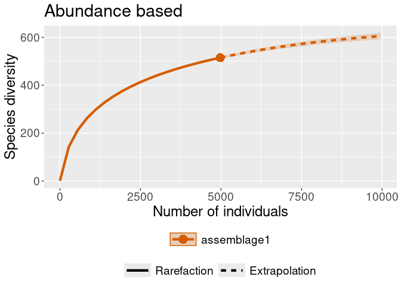

Installation
You can install the development version of vlindersRarefaction from GitHub with:
# install.packages("devtools")
devtools::install_github("PietrH/vlindersRarefaction")Scope
This simple and experimental package converts a dataframe with a known format to the format the iNEXT package expects for abundance and incidence frequency data.
The package was written with exactly this file in mind as a draft, with little flexibility. This means that if your file doesn’t look like this:
#> Rows: 2,976
#> Columns: 5
#> $ date <date> 2009-06-19, 2009-07-01, 2009-08-13, 2009-08-30, 2010-06-…
#> $ species_name <chr> "Bruine huismot", "Oranje iepentakvlinder", "Oranje worte…
#> $ year <dbl> 2009, 2009, 2009, 2009, 2010, 2010, 2010, 2010, 2010, 201…
#> $ number <dbl> 1, 1, 1, 1, 1, 1, 1, 1, 1, 1, 1, 1, 1, 1, 1, 1, 1, 1, 1, …
#> $ MicroMacro <chr> "Micro", "Macro", "Macro", "Macro", "Macro", "Macro", "Ma…This package will not work for you. Please create an issue if you would like to use it on data of a different shape (although at that point I’ll probably just rewrite it to accept DarwinCore occurrence inputs).
This is a basic example on how you can plug this package into iNEXT:
library(vlindersRarefaction)
## convert to formats iNEXT is expecting, then calculate rarefaction curves
rare_out_inc <-
iNEXT::iNEXT(convert_to_incidence_freq(warande),
datatype = "incidence_freq",
nboot = 2 # for speed
)
rare_out_abun <-
iNEXT::iNEXT(convert_to_abundance(warande),
datatype = "abundance",
nboot = 2 # for speed
)
## and plot them:
iNEXT::ggiNEXT(rare_out_abun) + ggplot2::ggtitle("Abundance based")